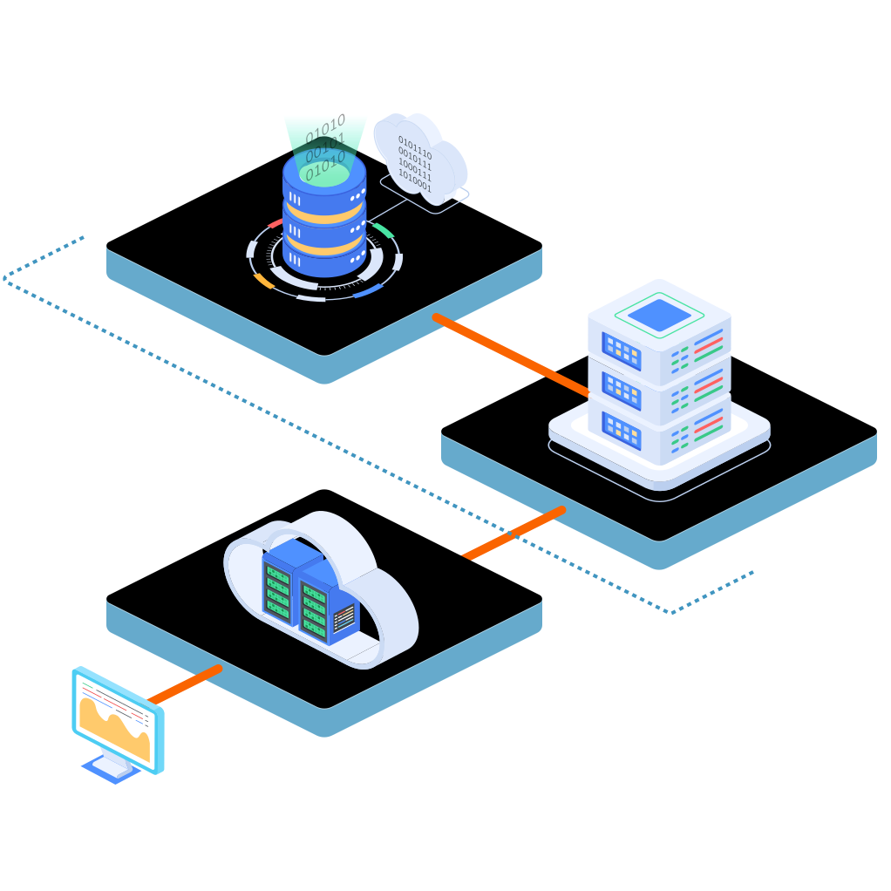

What is orchestration?
Orchestration is configuring, managing, and coordinating infrastructure, software applications and services.
Orchestration is focused on coordinating automated tasks to work together
Automated tasks provide a preditable results while running on their own

Example: Multi-tier application from an infrastructure perspective